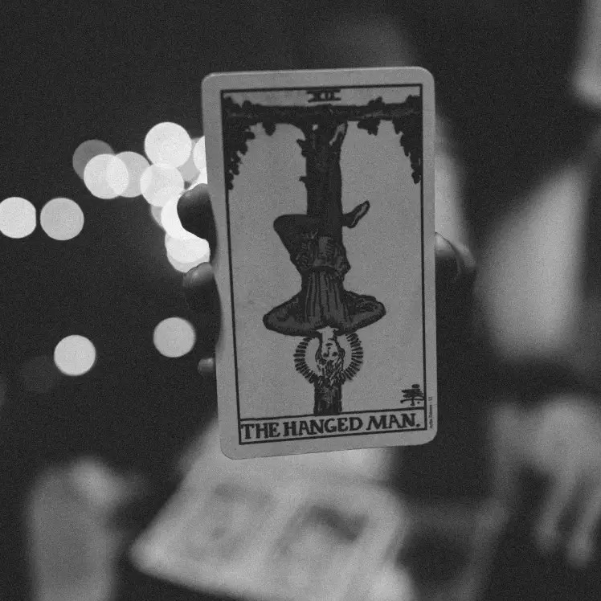

The hanged man and the astrology dance
Published on 7 December 2021 by erinzaps 10 minute read
In October 2020, I went on a solo trip to Tofino, a seaside town on the coastline of Vancouver Island. I have often sought out time alone, a necessity especially with a roommate as I had at the time. My infatuation with manifestation and universal co-creation occurred earlier that year after learning of and completing a few To Be Magnetic workshops. This movement did not follow any particular moment or instance; I typically accelerate into lively spurts of self-development after many low roars of self-development. Everything of my own volition, hungry always to find out more, time after time running into the fire to be gladly burned.
I bid my roommate and her cat farewell and left the cozy Marpole apartment. The Horseshoe Bay ferry took me to Nanaimo, then a three hour drive through Parksville and Port Alberni, eventually coming to a fork where one can go south to Ucluelet, north to Tofino, or still west directly into the Pacific Ocean. My incompetence with curating playlists led me to a prefabricated edition by one Jaime Tobias, a stranger somewhere out there in the world who didn’t seem much like a stranger with the similarities between our musical interests. I exhausted my lungs to Maggie Rogers’ “Falling Water” about eight times in a row before having steady-enough service to advance the song. It’s a great way to clear out the throat chakra. Semi-related: I always think that if you want to have a good, cathartic cry, have a yell first to bring those emotions to the surface (if you dare).
My life is characterized by a challenge to feel. Being a Cancer Sun, it seems my duty is to be moved by matters, people, and the world in general (more on that to come). I must remark, though, on my conscious avoidance of emotions. I have upended various rooms of my life in an effort to find out what I’m doing here. I might liken it to furiously trying to find your glasses, looking high and low, stomping around in frustration only to find them on your head. At the end of the day, I feel like I know what my purpose is and, fittingly, tears well as I write this. Out of gratitude, sadness, or knowing, I am not sure. I think perhaps the first. Maybe tears of mercy… tears you cry when you come home after being away for a very long time.
Hello from Tofino
I stayed at Hotel Zed, a newly completed build a few minutes’ walk from Chesterman Beach. It was golden hour when I arrived. I had an obligatory taco from the original Tacofino food truck and walked to the beach to catch the sunset. I had created a schedule for myself that included touristy things like whale watching and surf lessons, but I also brought my yoga mat and had every intention to go within and to contemplate deeply. I never experienced life in the seventies, but I appreciated a manufactured, packaged version of this decade in the form of brass sunburst hardware, loud, patterned carpet, and accents in various shades of brown, orange, and purple. I loved the novelty of the establishment, right down to their disco (complete with disco ball), their sunken lounge wrapped in thick green carpet, and their more intimate “Psychic’s Den”, where I was to meet Karedwyn Bird, a local artist and astrologer, among other admirable titles. She was to interpret my natal chart for me, another piece of my perpetual scramble to uncover my purpose. The night before our meeting I received a confirmation call. The connection was scratchy and she apologized for the poor reception, explaining she was calling from a houseboat. She asked if I had my birth date, time, and place and I said yes to all. This wasn’t my first rodeo. They seem to be the three keys to the art of astrology and me being me, I kept them all close at hand, desperately ready to shell them out as soon as I recognized an opportunity to find out more about myself.
The reading
We agreed to meet at 7 o’clock in the aforementioned Psychic’s Den. Being both an interior designer and appreciator of all things esoteric (you may relate better to the term woo-woo), I loved this room. Heavy velvet curtains separated it from the hotel lobby, doing an adequate job of blocking out light and sound from the other side. The room was small and rectangular with a curved banquette seat running along the back wall. It was offset, allowing spiritual tchotchkes to sit on a ledge. A low, gold table with a crystal ball sat on top of a collection of plush rugs. A small chandelier hung low from the ceiling, topping the entire setting and sending a radius of light and dark spots on the wall and ground. Karedwyn was there when I elevatored down from my room. She was tall and bony. Her eyes were wide, emphasized with glasses that she pivoted up and down frequently from the top of her head to the bridge of her nose. When they were on her head it pushed up pieces of her hair in loops. Even if she knew this I don’t think she would have cared; despite her willowy frame, her jewelry, and thin cardigan, she had a careless, masculine presence, sitting with her knees apart and taking up space like a box. She was wonderfully unpredictable. Karedwyn introduced me to something called Kabalistic Tarot Numerology. I haven’t read much about it since, but to my understanding she added the numbers of each the month, day, and year of my birth and broke the sum down into smaller numbers with the first of those being a sort of predominant integer. This integer would correspond to a major arcana card in a deck of tarot. My reading would consist of this number/tarot combo as well as an interpretation of my natal chart.
The magic number
The number 12 had never held so much weight, and I felt like I depended on it as if it might unlock potential as quickly as snapping one’s fingers. It didn’t, really, but it did plant a seed. Maybe that seed had been there my whole life, the entirety of my twenty-five years, and I was only just noticing it, feeling it inside me like an almond in its pocked shell or a pearl in a clam. You see, the number 12 corresponds to the Hanged Man. The Hanged Man is a beautiful card if not for its symbolism then for its depiction in my own Fountain Tarot deck. A man hangs upside-down by his right ankle, left knee bent, foot behind the right knee, creating the number 4 with the lower body. He hangs with his shoulders proudly square, arms linked behind his back. In traditional decks he is depicted with a halo, but in my deck the sun sets behind him, directly under his head. To me this ball of sun is his halo. Its a key aspect of this card; the yellow glow is a sign of intellect. Little Red Tarot said it best: “[The Hanged Man doesn’t] mind hanging upside down. It’s a choice. Doing nothing can be so much harder than doing something, but the Hanged Man has the courage, discipline, and self-respect to do it.” If you were upside-down you might be caught in struggle, like a rabbit in a snare trap, but there’s peace here in this card. I knew it then and a year of reflection has me noticing even more of it.
Doing nothing is one of the most difficult things to do. To touch the water is to muddy it is to not see clearly; to let the water be by not touching it is to see clearly. In my mind’s eye I see the devil’s snare from Harry Potter, Hermione gracefully slipping through and down by remaining calm. That is the way I want to approach life, but I tend to pull Ron-Weasleys, not being able to stop squirming and flailing long enough to relax the vines around my wrists and ankles.
Karedwyn told me of the Hanged Man and the path of surrender and glory it teaches. I sat with eyes like orbs, legs politely crossed. I dressed in all black, something she commented on when we reached the topic of self-expression. She told me I ought to take up more space, to figuratively smack down my presence and my reason for being anywhere like it was a sack of gold coins, saying something like “Yes! I am alone here”, in a way that might also tell you I wouldn’t have it any other way. I have oft walked this path of self-discovery timidly, shy about my age in relation to spiritual development. Chronologically I was twenty-five, but spiritually I felt eighty.
I don’t think you need to be old to be spiritual. I don’t think you need to endure years of life lessons, of hardship, to grasp the person you are becoming. In Abraham Hicks’ fashion, were I to abolish the words “I don’t” from my vocabulary, I would say that you can be young and spiritual at the same time; that you can be spiritual at any age. You were the person you are becoming when you were born; in other words, becoming yourself and developing yourself as a human being is the exact same thing as coming home to yourself. You were born knowing. You knew it then and you know it now. Your worth was full in your conscious and your subconscious and you did not doubt or question it. You slept when you were tired and ate when you were hungry. You played and asked questions and pushed the envelope. I think coming home to yourself is a lot like that. What makes it sometimes feel foreign, wrong, is the world around us insistent on becoming something or someone. I am reminded of this quote:
The meaning of life is just to be alive. It is so plain and so obvious and so simple. And yet, everybody rushes around in a great panic as if it were necessary to achieve something beyond themselves” - Alan Watts
I do not wish to lend too much attention to the following, but for contrast I would ask the purpose of greed, of corporate superstructures, of clear-cutting, literally, the world around us with such venom. These things are so; however much I wish they weren’t, they are within my scope upside down like the Hanged Man and I am grateful even for them.
He sees things from a different perspective, courageously making the choice to watch the happenings of the world around him unfold, maybe waiting for the right time to take action. There is an exorbitant amount of beauty here, upside down. More and more I settle into the idea that is is a gift to feel so deeply. It presents challenges, definitely, but it is not a sad thing to be so aware of the world around you.
The birth chart
I would like to write about the natal chart portion of my reading, so that (a) I can solidify the memory, and (b) to quench the curiosity of those who have read thus far. I find astrology intriguing. There is a basis of it so wondrous I’m not sure a word exists for it. You do not have to fulfill the naysayer archetype, wary of women with crystals whose knees knock with the words What time were you born, to know and believe that life is a dance between happenstance and free will. I like to think that dance is the basis of everyone’s existence. To believe in astrology is not to lean on it totally, to depend on it, or to expect it to make your decisions for you. It’s a tool and a skeleton. The rest is meat and muscle, determined by you without you even trying to do so. By only being here you are writing your story.
Despite possessing a matronly Cancer Sun, I have four planets in Gemini, with Gemini being also my rising/ascendant sign. One interesting piece imparted on me was that through all your lives, your rising sign remains the same. Through hundreds of lives, I did have and will expect Gemini to be rising into the eastern sky at the time of my birth. While Cancer is homey and protective, Gemini is playful and curious. Russell Brand is the most embodied Gemini I know, being exactly in the middle of the Gemini “window”, equidistant from the Taurus-Gemini cusp and the Gemini-Cancer cusp. I was born closer to the Gemini-Cancer cusp, which means I may embody more Gemini qualities despite being a Cancer Sun in actuality. This makes sense to me, though I have often held onto a Cancer identity without giving the other, explorative part of me room to breathe. I feel as though this version of myself is seen and yearned for by me, but it is just beyond reach. This wonder is a path home to myself, I think.
The qualities of my chart are predominantly mutable air signs. Translation: I will try my best at all times to harmonize with the world around me, often before recognizing my own needs. I like to think this is why I have my fingers in so many pies. I used to feel ashamed of this, but I now pray that my feet never touch the ground. How exciting it is to lead a varied life, to be able to do so many things. It does mean a lot of unfinished projects and distractions, but for me, forget being committed unless it be to change.
Cancers are crabs
When a crab molts it separates its tissues and muscles from its shell. It takes in water and swells, becoming so full that it cracks, forming a seam near the back of its body. Using its legs, it pushes itself backwards out of its own skeleton. It is vulnerable now with its new, soft shell. Until it hardens, the crab will hide from predators, continuing to take in water so that the shell hardens with some room to grow. I sat fascinated as Karedwyn told me of the process, totally cognizant of the fact that in the fall/winter season of each year I complete a similar process of ridding myself of heavy burdens and (proverbial) parasites. It has manifested as a new job, a big move, and the end of a relationship (sometimes all three, god help me). There have been times, are times, when I feel like my shell is too hard to crack no matter how much water I take in, or that I am too weak to squeeze out of it. There are times when I feel like my shell will never harden and that it will remain soft and prone to injury. Molting involves calculated risk.
I have recounted my experience with Karedwyn several times with different people. Sometimes I feel that these memories of mine are too precious to put out into the world. My instinct is to hold them close to the vest, away from prying eyes and from people who sometimes seem committed to misunderstanding a sensitive individual. I’m not sure this method is serving me anymore though. This season, I feel more inclined to share.
I want to circle back to the Hanged Man briefly and layer it onto my chart reading so as to make better sense of all the information. I have a hunch. I am here at my kitchen table, blanket on my lap and jasmine tea inches from my right hand. My eyes are heavy. I am tired but not sleepy. To become unsleepy one needs sleep; to become untired, one must find value and meaning in their decisions and actions. I’d rather not declare to the world again and again, I think I’ve got it this time, but I will say I feel more full by writing. I am upside down by choice. It is so quiet here that my ears ring, but I can’t see myself anywhere else. I gather the courage to open my eyes and find beauty here where most may not see it, and I’m sharing it with you. If you’ve made it so far as to read this article in its entirety, thank you.
Truth be you üñ§